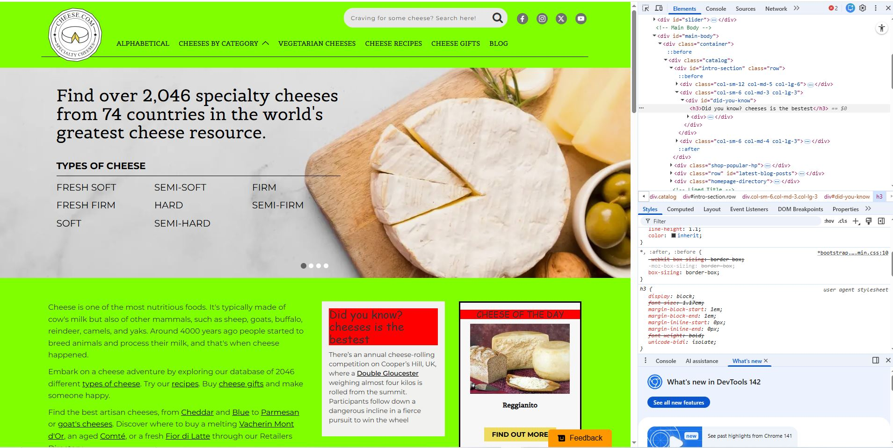

My Dev Tools Vandalism
I modified the html and css code for cheese.com

What I "Vandalized"
Describe the changes you made to the website using the browser's developer tools. Some potential questions to consider:
- I changed one of the heading to display my love of cheese
- I changed the font of the heading I modified. As well as the text box background color and main site color.
- It is already a silly website. Now the background color is painful to look at.
- I was originally having trouble drilling down to the exact line of code I needed to edit. The elements panel also did not behave quite the same as VSC
- Bright dramatic change that would be obvious since the webpage did not have many large titles.